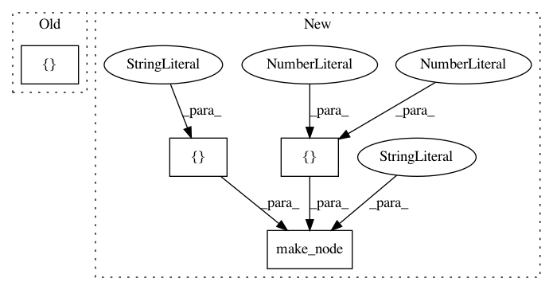

0ca9376558b45d54a932b84652c8f8fde45481fc,test/test_node.py,TestStringMethods,test_run_all,#TestStringMethods#,27
Before Change
def test_run_all(self):
X = self._get_rnd([100])
run_node(helper.make_node("Relu", ["X"], ["Y"]), [X])
if __name__ == "__main__":
unittest.main()
After Change
dummy_inputs = [self._get_rnd([100]) for i in range(10)]
run_node(helper.make_node("Relu", ["X"], ["Y"]), dummy_inputs[0:1])
run_node(helper.make_node("PRelu", ["X", "Slope"], ["Y"]), dummy_inputs[0:2])
run_node(helper.make_node("Pad", ["X"], ["Y"], mode="constant", paddings=[1,1], value=1.0), dummy_inputs[0:1])
if __name__ == "__main__":
unittest.main()
In pattern: SUPERPATTERN
Frequency: 3
Non-data size: 4
Instances
Project Name: onnx/onnx-tensorflow
Commit Name: 0ca9376558b45d54a932b84652c8f8fde45481fc
Time: 2017-10-22
Author: tian.jin1@ibm.com
File Name: test/test_node.py
Class Name: TestStringMethods
Method Name: test_run_all
Project Name: apache/incubator-tvm
Commit Name: 900254d3425ba728dacbf8e5e0ce29fce8eccd3f
Time: 2020-05-06
Author: mbrookhart@octoml.ai
File Name: tests/python/frontend/onnx/test_forward.py
Class Name:
Method Name: _test_upsample_bilinear_opset9
Project Name: onnx/onnx-tensorflow
Commit Name: e26f4d138ddcd15635f93c3198a0f328111c0dc0
Time: 2018-10-06
Author: chhuang@us.ibm.com
File Name: test/backend/test_node.py
Class Name: TestNode
Method Name: test_slice